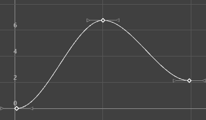
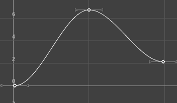
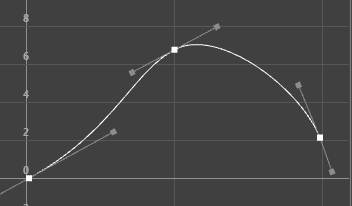
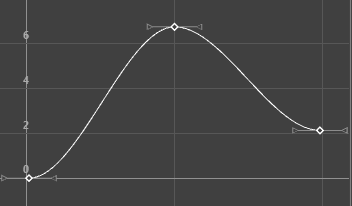
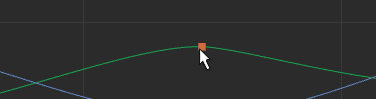

切线用于描述关键帧中曲线分段的进出。该菜单将围绕选定关键帧对曲线分段形状进行操作。请注意，这些设置仅影响现有动画曲线分段的切线。
下面显示的动画展示了其他切线选项如何更改具有默认自动切线的曲线。原始曲线显示在蓝色缓冲区曲线中，以便比较您的切线选项如何影响曲线形状。
- 自动
-
使用“自动”(Auto)切线设置可定义切线用于影响曲线形状的方法。
-
- 自动跨度(旧版)(Auto Span (Legacy))
- 创建第一个关键帧和最后一个关键帧具有平坦切线的动画曲线，且之间的关键帧数不会超过相邻关键帧值。这类曲线可以防止穿透紧密的已设置动画的对象时，出现使用其他切线类型（如样条线）将会出现的问题。
- “自动跨度”(Auto Span)切线会根据相邻关键帧值将帧之间的曲线值钳制为最大点或最小点。“自动跨度”(Auto Span)是新关键帧的默认设置（它在“动画”(Animation)首选项（在“设置”(Settings)下）中设定为“默认入切线”(Default in tangent)和“默认出切线”(Default out tangent)）。
- 热键：D
- 自动缓入缓出(Auto Ease)

- 使用立方融合权重，其深受相邻关键帧的影响。
- 自动混合(Auto Mix)

- 两个坡度的线性融合。
- 自动自定义(Auto Custom)

- 两个坡度的可自定义融合。单击“自动自定义”(Auto Custom) >
 可打开一个窗口，您可以在其中为融合输入系数。
可打开一个窗口，您可以在其中为融合输入系数。
- 样条线(Spline)
-

指定样条线切线将选定关键帧之前和之后的关键帧之间创建一条平滑的动画曲线。曲线的切线共线（均位于相同的角度中）。这样可以确保动画曲线平滑地进出关键帧。为流体移动设置动画时，样条线切线是一个很好的开始位置。您可以使用最少的关键帧达到所需的外观。
- 线性(Linear)
-

指定线性切线之后，系统会将动画曲线创建为接合两个关键帧的直线。如果入切线类型为线性，则关键帧之前的曲线分段为直线。如果出切线类型为线性，则关键帧之后的曲线分段为直线。为炉子中的加热元素的颜色设置动画时，您可以使用线性将颜色从炭灰色逐渐更改为燃烧的火红色。
- 钳制(Clamped)
-

-
指定钳制切线时，系统将创建具有线性和样条曲线特征的动画曲线。
-
除非两个相邻关键帧的值十分接近，否则关键帧的切线将为样条线。在这种情况下，第一个关键帧的出切线和第二个关键帧的入切线将作为线性插值。
-
为循环行走中骨架设置动画时，您可能会注意到，骨盆和脚关节的位置落后。这是因为曲线中的关键帧的值相同，或者与其他值接近（在容差范围内）。Maya 将指定默认样条线切线，以描述这些关键帧之间出现的现象。这就是关节位置落后的原因。
-
通过将这些关键帧的切线类型设定为“钳制”，可以校正进度落后现象，并且使切线成为线性和样条线的组合。
在 Maya 环境首选项中，“钳制”(Clamped)是默认的切线类型。
- 阶跃(Stepped)
-

指定阶跃切线时，系统将创建其出切线为平坦曲线的动画曲线。
由于曲线分段为平坦（水平），因此该值将在每个关键帧中更改，且不会出现层次。
闪光灯中的灯光将打开和关闭。若要创建类似于闪光灯的效果，则需使用阶跃切线。
提示： 若要像所有关键帧均具有阶跃切线一样快速预览动画，请在“时间滑块”(Time Slider)上单击鼠标右键，然后切换“启用阶跃预览”(Enable Stepped Preview)选项。如果启用“启用阶跃预览”(Enable Stepped Preview)，播放动画可以在对象碰到每个关键帧时快速查看这些对象的位置。如果禁用“启用阶跃预览”(Enable Stepped Preview)，曲线将返回到其原始切线类型。 - 阶跃下一个
-

默认情况下，FBIK 动画关键帧使用“阶跃下一个”切线类型。该切线类型与常规阶跃切线不同，其插值会立即跳至下一个关键帧的插值，而不是在达到下一个关键帧之前始终保持当前关键帧的值。
- 平坦(Flat)
-

在具有加权切线的曲线上设置的平坦切线
将关键帧的入切线和出切线设定为水平（渐变为 0 度）。球在达到上坡度时，在开始下降之前，它将在空气中做短暂的悬停。可以通过使用平坦切线来创建这种效果。
- 固定窗
-

指定固定切线之后，编辑关键帧时，关键帧的切线将保持不变。
设置球的动画时，您可能会发现，球并不会从理想的高度落下，但它对地板和所有其他事物的影响十分完美。使用固定切线，可以在保留切线角度的同时，更改球的高度。这与“关键帧 > 烘焙动画”(Key > Bake Animation)稍有不同。
如果需要执行以下操作，则该处理十分有用：
- 编辑一条动画曲线，而不是影响单个属性行为的所有起作用属性，例如，受驱动关键帧或“表达式”(Expression)影响的对象。
- 将关键帧添加到现有曲线
- 高原(Plateau)
-
在具有加权切线的曲线上设置的高原切线
高原切线不仅可以在其关键帧（如样条线切线）轻松输入和输出动画曲线，而且还可以展平值相等的关键帧（如钳制切线）之间出现的曲线分段。高原切线的行为通常类似于样条线切线，但它可以确保曲线的最小值和最大值均位于关键帧中。
如果需要关键帧的位置十分精确，则高原切线十分有用，因为它们可以确保曲线的最小值和最大值（丘陵和山谷）不会延伸超过其关键帧。例如，绘制球从桌子中滚下、落到地面、然后在地面上翻滚的动画图片。使用样条线切线，球可以落到地面上，然后再次回落到地面。使用高原切线，球不会落到地面上。切线可保证动画不会超出设定关键帧的值范围之外。
为此，如果样条线切线将在两个关键帧之间生成最小值或最大值，则高原切线将会展平相关的关键帧。曲线的局部最小点和最大点中的关键帧也会展平。最后，如果曲线的第一个关键帧和最后一个关键帧具有高原切线，则它们始终会展平。
- 入切线(In Tangent)
-
支持仅为“入切线”(In Tangent)指定切线类型。“入切线”(In Tangent)将定义在关键帧之前出现的曲线分段的类型。
使用“曲线图编辑器”(Graph Editor)工具栏中的“入切线角度”(In Tangent Angle) 和“入切线权重”(In Tangent Weight) 字段，更改选定切线的角度和权重。
- 出切线(Out Tangent)
-
支持仅为“出切线”(Out Tangent)指定切线类型。“出切线”(Out Tangent)将定义在关键帧之后出现的曲线分段的类型。使用“出切线角度”(Out Tangent Angle) 和“出切线权重”(Out Tangent Weight) 字段，更改选定切线的角度和权重。（有关这些选项的详细信息，请参见“曲线图编辑器”(Graph Editor)工具栏。）
若要更改出切线角度，必须先断开切线（(Graph Editor > Tangents > Break Tangents)）。 - 统一切线(Unify Tangents)
-
注： 此设置仅适用于断开的切线；统一后，断开的切线将重新连接起来，但会保留新角度。
使您能够保留切线的角度和长度。即使是在切线分别调整（通过在选择之后分别编辑切线）之后，“统一切线”(Unify Tangents)也会保留切线控制柄的相对位置。
- 默认入切线(Default In Tangent)
-
指定默认的入切线类型。“入切线”(In Tangent)设置控制动画分段在关键帧前的形状。
注： 也可以在“动画”(Animation)首选项（在“设置”(Settings)下）的“切线”(Tangents)区域中配置这些默认值。选项包括：
- 自动
-
（默认）“自动入切线”将当前的关键帧值与上一个关键帧值进行比较，并在曲线分段高于或低于这些关键帧值时展平曲线分段。有关“自动缓入缓出”(Auto Ease)、“自动混合”(Auto Mix)和“自动自定义”(Auto Custom)切线类型的描述，请参见本页顶部的“自动”(Auto)。
- 样条线(Spline)
-
样条线切线在关键帧之前平滑地圆化动画曲线。如果关键帧的出切线也是样条线，则曲线的切线是共线的（即角度相同）。这样可以确保动画曲线平滑地进出关键帧。
- 线性(Linear)
-
线性切线在关键帧前将动画曲线创建为直线。
- 钳制(Clamped)
- 钳制切线在关键帧前平滑地圆化动画曲线（类似于样条线选择），除非下一个关键帧非常接近。如果是这样，则入切线和上一个关键帧的出切线均为直线（类似于线性选择），从而使关键帧之间的动画曲线变为直线。
- 平坦(Flat)
-
平坦切线类型将关键帧前的切线设置为水平，坡度为 0 度（平面）。
- 高原(Plateau)
-
高原切线类型使动画曲线缓入和缓出其关键帧，展平出现在等值关键帧之间的曲线分段，展平其曲线中出现高山和峡谷的点的关键帧，以及展平其曲线上的第一个和最后一个关键帧。
- 默认出切线(Default out tangent)
-
指定默认的出切线类型。“出切线”(Out Tangent)设置控制动画曲线紧挨关键帧后的形状。请观看上述动画，了解不同切线类型如何影响曲线。
-
选项包括：
- 自动
-
（默认）“自动出切线”将当前的关键帧值与下一个关键帧值进行比较，并在曲线分段高于或低于这些关键帧值时展平曲线分段。有关“自动缓入缓出”(Auto Ease)、“自动混合”(Auto Mix)和“自动自定义”(Auto Custom)切线类型的描述，请参见本页顶部的“自动”(Auto)。
- 样条线(Spline)
-
样条线出切线在关键帧后平滑地圆化动画曲线。如果关键帧的入切线也是样条线，则曲线的切线是共线的（即角度相同）。这样可以确保动画曲线平滑地进出关键帧。
- 线性(Linear)
-
线性切线在关键帧后将动画曲线创建为直线。
- 钳制(Clamped)
-
指定在关键帧后平滑地圆化动画曲线（类似于样条线选择），除非下一个关键帧非常接近。如果是这样，则出切线和上一个关键帧的入切线均为直线（类似于线性选择），从而使关键帧之间的动画曲线变为直线。
- 平坦(Flat)
-
平坦切线类型将关键帧后的切线设置为水平，坡度为 0 度（平面）。
- 阶跃(Stepped)
-
阶跃切线类型强制动画曲线将其值从一个关键帧保留到下一个关键帧。
- 高原(Plateau)
-
高原切线类型使动画曲线缓入和缓出其关键帧，展平出现在等值关键帧之间的曲线分段，展平其曲线中出现高山和峡谷的点的关键帧，以及展平其曲线上的第一个和最后一个关键帧。
- 断开切线(Break Tangents)
-
允许分别操纵入切线和出切线控制柄，以便可以编辑进入或退出关键帧的曲线分段，且不会影响其反向控制柄。
- 锁定切线长度(Lock Tangent Length)
-
在 Maya 的早期版本中，以前称为“锁定切线权重”(Lock Tangent Weight)。
指定移动切线时，仅可更改其角度。这会强制相关联的曲线分段保留切线的权重。这仅适用于加权曲线。切线控制柄会在被锁定后变为黑色。
- 自由切线长度(Free Tangent Length)
-
在 Maya 的早期版本中，以前称为“自由切线权重”(Free Tangent Weight)。
指定移动切线时，可更改其角度和权重。这允许调整切线的权重和角度。这仅适用于加权曲线。切线控制柄在不受约束时呈浅灰色。